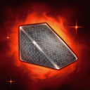
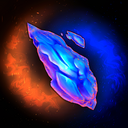
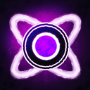
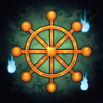
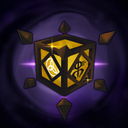

神器
Artifacts（神器）
Artifact 是 Ecliptica 中关键的推进形式。每层在挑战 boss 前，你都需要先完成它们提供的额外目标。
当前持有的 Artifact 实际上决定了你接下来会进入哪张 Map。
在未来版本中，被献祭的 Artifact 还会决定你在 Eye of the Eclipse 会面对哪个 boss。不过在 Patreon Demo Playtest 中，你总是会面对 ?。
目前共有七种 Artifact。把它们带到维度传送器会给全队带来属性奖励，算是对这番辛苦的回报。
| 名称 | 图片 | 队伍获得 |
|---|---|---|
| Encrypted Archive | 辅助技能冷却 -5%；移动速度 +5% | |
| Goblet of the Sun | LUMINOUS 伤害 +8%；SHADOW 防御 +8% | |
| HC Armor Plating |  |
PHYSICAL 防御 +7% |
| Heart of Cinders |  |
ELEMENTAL 防御 +6% |
| Orb of Malice |  |
SHADOW 伤害 +6%；LUMINOUS 防御 +6% |
| Wheel of Reincarnation |  |
受到治疗 +3%；最大 HP +5 |
| Sealed Megium |  |
伤害 +3% |